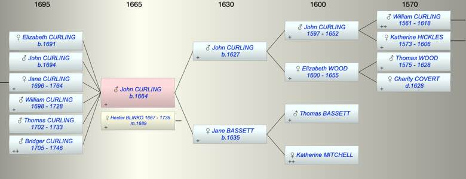

| [Index] |
| John CURLING (1664 - ) |
|  |
| b. 1664 at St Laurence |
| m. 26 Dec 1689 Hester BLINKO (1667 - 1735) at St Andrew Canterbury |
| Parents: |
| John CURLING (1627 - ) |
| Jane BASSETT (1635 - ) |
| Siblings (4): |
| Thomas CURLING (1653 - ) |
| Elizabeth CURLING (1655 - ) |
| Jane CURLING (1658 - ) |
| Katherine CURLING (1662 - ) |
| Children (6): |
| Elizabeth CURLING (1691 - ) |
| John CURLING (1694 - ) |
| Jane CURLING (1696 - 1764) |
| William CURLING (1698 - 1728) |
| Thomas CURLING (1702 - 1733) |
| Bridger CURLING (1705 - 1746) |
| Grandchildren (4): |
| Nicholas HOOPER (1721 - 1781), Jane HOOPER (1727 - 1730), John HOOPER (1729 - 1730), Jane HOOPER (1734 - ) |
| Events in John CURLING (1664 - )'s life | |||||
| Date | Age | Event | Place | Notes | Src |
| 1664 | John CURLING was born | St Laurence | Note 1 | ||
| 26 Dec 1689 | 25 | Married Hester BLINKO (aged 22) | St Andrew Canterbury | Note 2 | |
| 1691 | 27 | Birth of daughter Elizabeth CURLING | St Laurence | Note 3 | |
| 1694 | 30 | Birth of son John CURLING | St Laurence | Note 4 | |
| 1696 | 32 | Birth of daughter Jane CURLING | St Laurence | Note 5 | |
| 1698 | 34 | Birth of son William CURLING | St Laurence | Note 6 | |
| 1702 | 38 | Birth of son Thomas CURLING | St Laurence | Note 7 | |
| 1705 | 41 | Birth of son Bridger CURLING | Note 8 | ||
| 27 Sep 1728 | 64 | Death of son William CURLING (aged 30) | St Laurence | Note 9 | |
| 03 Mar 1733 | 69 | Death of son Thomas CURLING (aged 31) | St Laurence | Note 10 | |
| 12 Sep 1735 | 71 | Death of wife Hester BLINKO (aged 68) | Note 11 | ||
| 1746 | 82 | Death of son Bridger CURLING (aged 41) | St Laurence | Note 12 | |
| 25 Jan 1764 | 100 | Death of daughter Jane CURLING (aged 68) | St Laurence | Note 13 | |
| Created on a Mac™ using iFamily for Mac™ on 8 Oct 2023 |